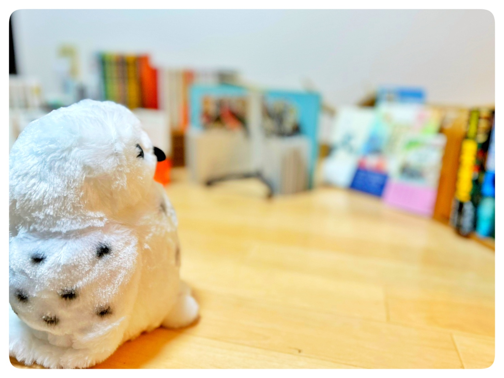

人生は捨てたもんじゃない

いい物語があって
それを語る人がいるかぎり
人生は捨てたもんじゃない
もし、よかったら…
あなたの話を聞かせてほしい…
わたしのことも誰かが
語ってくれていたら
そこにわたしの物語が
証明される
そんなことを考えていると
楽しくて仕方がない
思い出して...

ただただ過ぎる毎日
自分が思っていたものとは違う社会
そう感じてしまう人は
あなた自身を思い出してほしい
なぜ自分はこう考えるのか？
なぜ自分はこう感じるのか？
この問いと向き合う手段
読書と対話
記録

わたしも日々
いろいろなことを思い
さまざまなことを感じます
それはきっと
わたししかたどらない道
記録が誰かの目に留まり
何かしらの影響を及ぼす
わたししかたどらない道に
誰かが交差する
知りあい？友だち？なんだっていい
よび方なんて
どうだっていい
" 気付き "と" 学び "
たくさんのことを与えてくれる
ひとりひとりから
受けとるものは違う
わたしの巡り合えた
語っていきたい『 個 』
鳥さんの役目

鳥に話すと羽ばたけるかもしれない
いろんな人の考えをきき
あなたの中に取りこんでください
あなたが受けた影響は
あなたを形成していくでしょう
心が少し "ほっ…" と
するような
そんな居場所であり続けたい